Інші одновимірні атомати
Розширені правила
Щоб зробити правила автомата складнішими можна:
- Збільшити кількість сусідів, які впливають на клітинку
- Збільшити кількість станів в яких може перебувати клітинка
Правила для нових автоматів можна записувати таким же чином як і для елементарних автоматів. Тільки тепер потрібно переводити числа не в двійкову систему числення, а в ту, база якої дорівнює кількості станів автомата.
Щоб дізнатися кількість можливих ситуацій, які можуть скластись навколо клітинки автомата, потрібно піднести кількість сусідів (включно з самою клітинкою) до степеня кількості можливих станів клітинки. Для елементарних автоматів це число дорівнює 23 = 8.
Для кожної із ситуацій різні правила можуть назначити один зі станів. Тому, щоб знайти кількість можливих правил автомата, потрібно кількість станів піднести до кількості ситуацій. Існує 28 = 256 різних правил для найпростіших автоматів.
Знайдені мною автомати
Більша зона
Нижче перелічені правила для автоматів де на кожну клітинку впливає 5 інших. Такі автомати мають 225 = 4 294 967 296 різних правил.
Правило 717173652 з однієї точки: 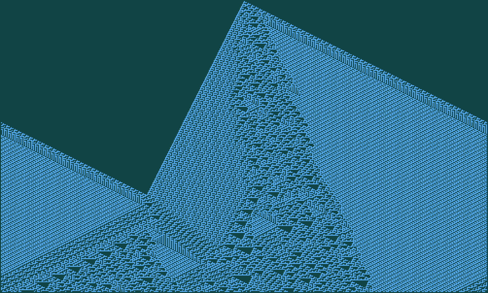
Правило 717173652 з випадкового набору точок: 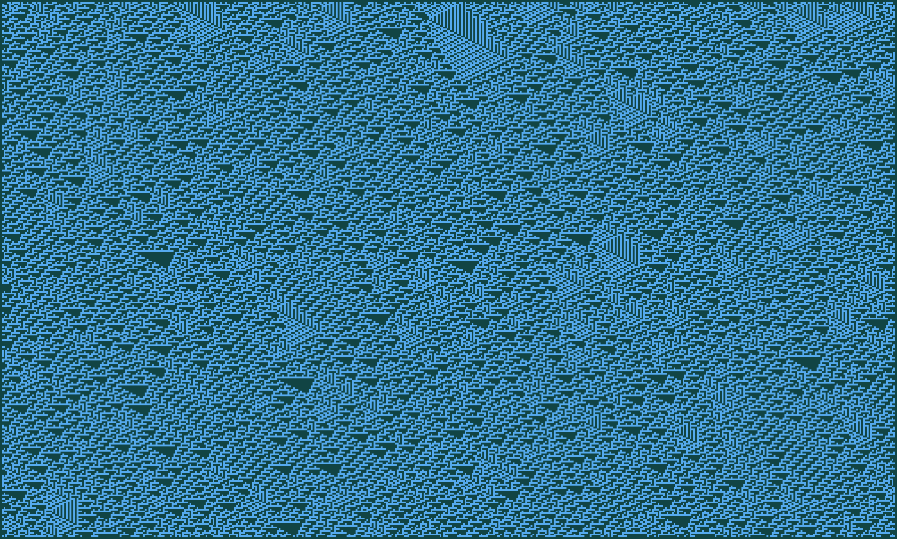
Правило 717623652 з однієї точки: 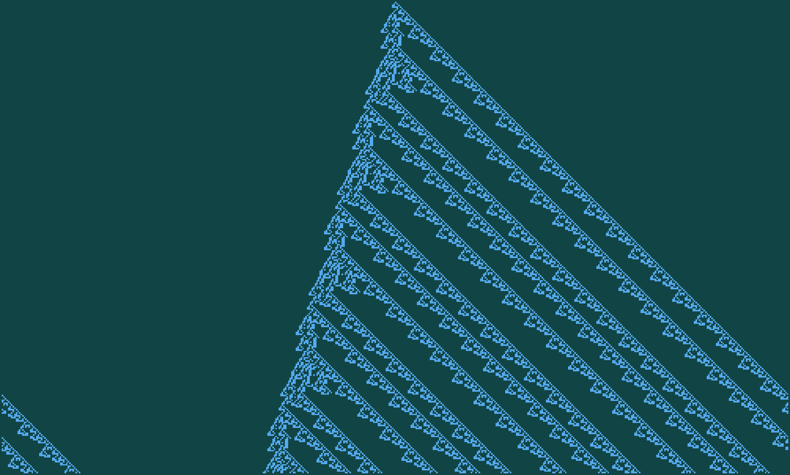
Правило 717173652 з випадкового набору точок: 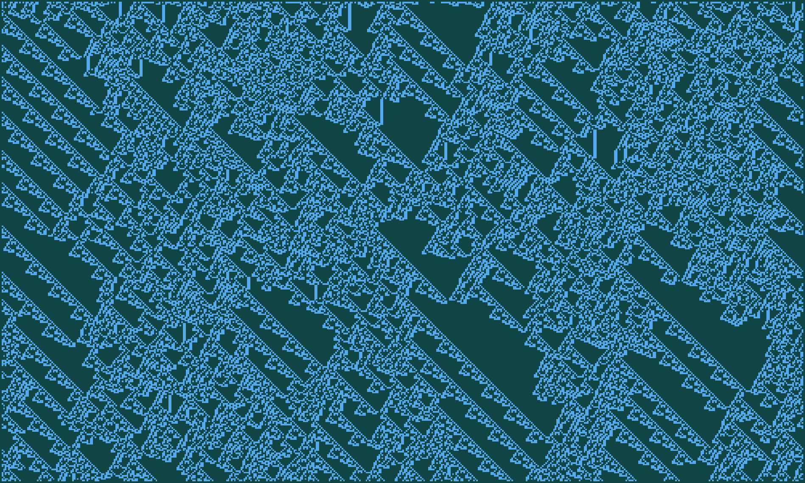
Більше станів
Також можна, щоб клітинки могли перебувати у третьому стані. На малюнках нижче стани позначені так:
- 0 — світло-блакитний колір
- 1 — темно-синьо-зелений колір
- 2 — рожевий або жовтий
Для такого автомата є 333 = 7 625 597 484 987 правил.
Правило 63128132528 з однієї точки: 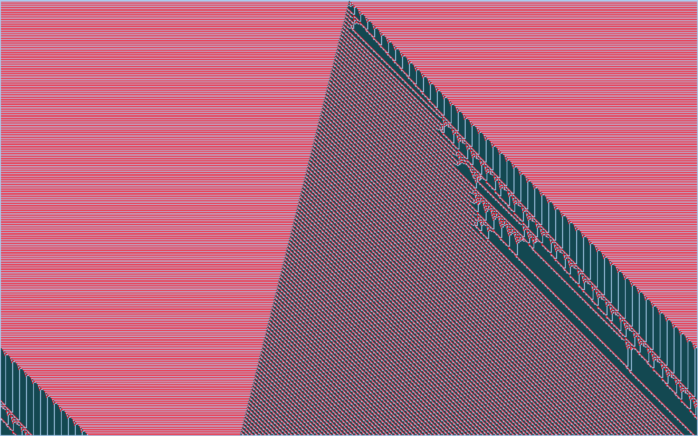
Правило 63128132528 з випадкового набору точок: 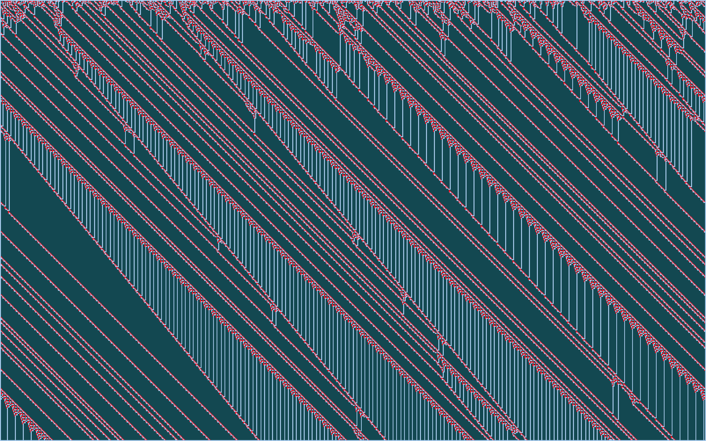
Правило 63219136528 з однієї точки: 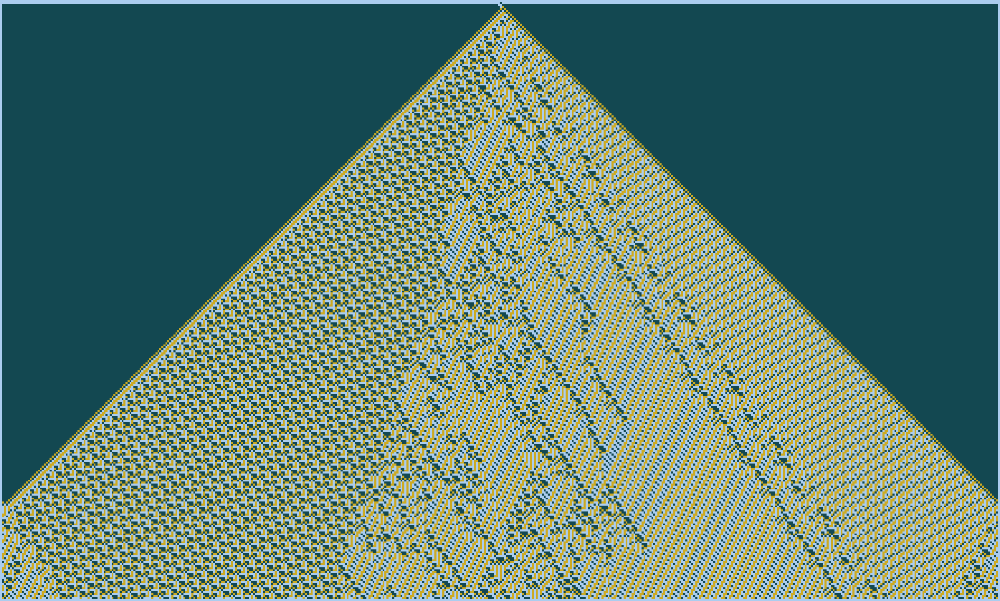
Правило 63219136528 з випадкового набору точок: 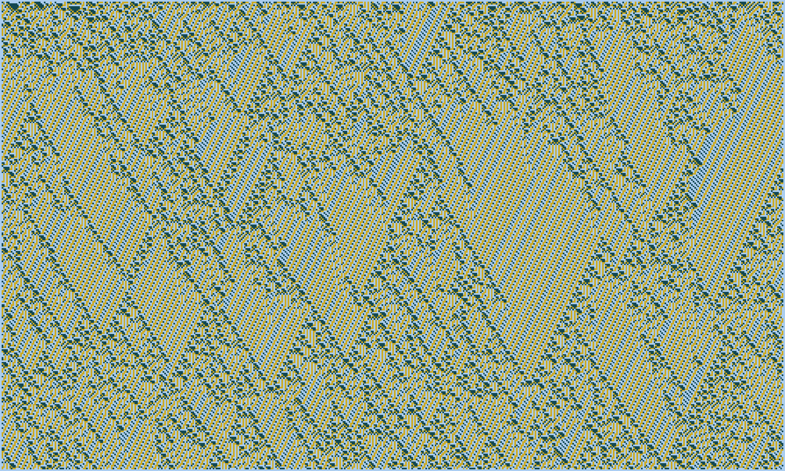
Правило 63888131728 з однієї точки: 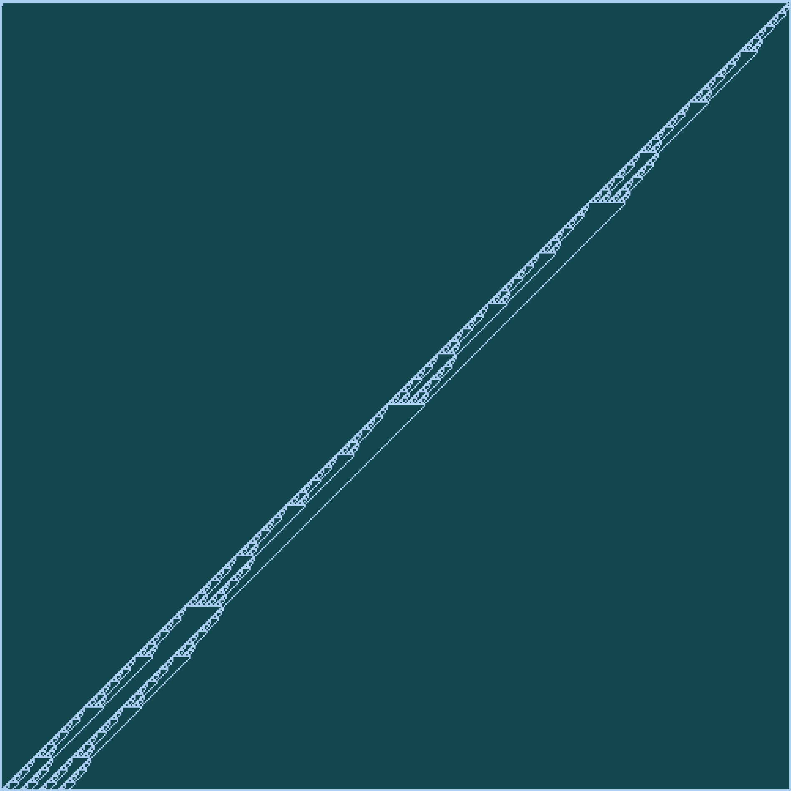
Правило 63888131728 з випадкового набору точок: 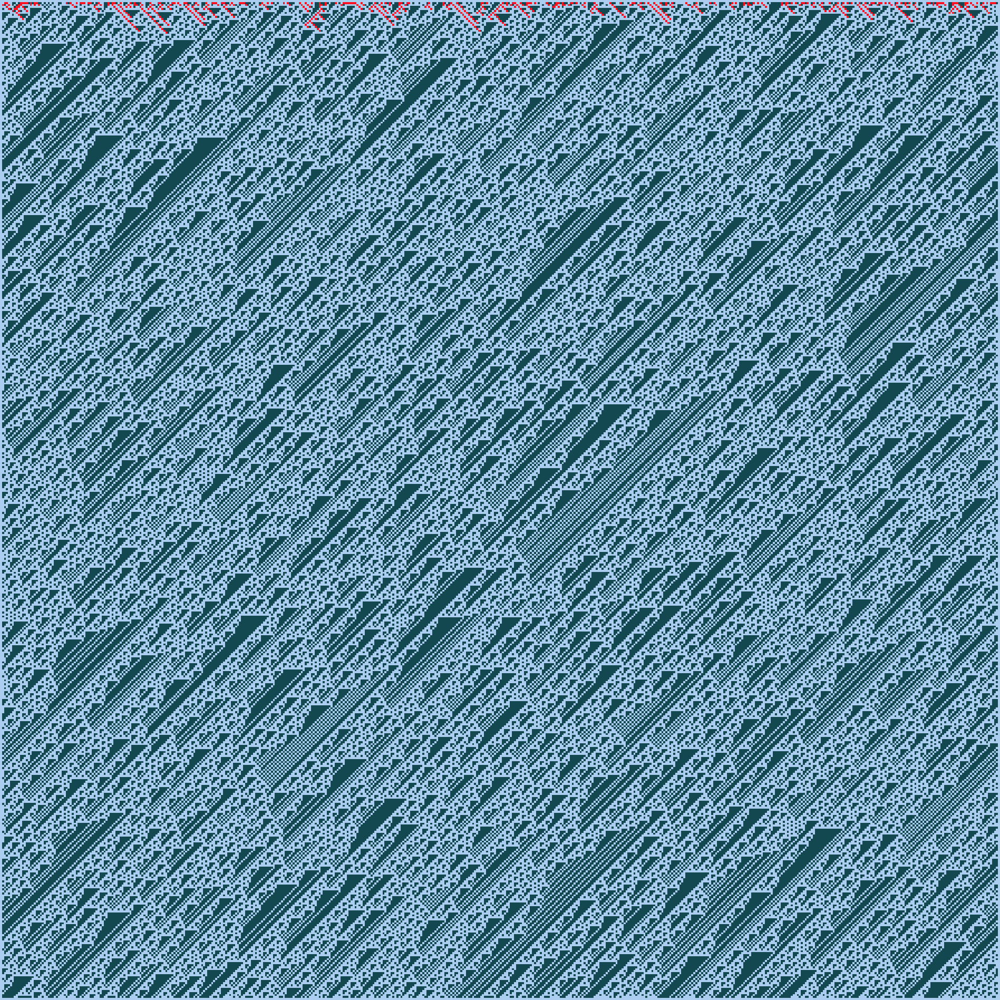
Більше всього
Якщо і збільшити кількість станів до трьох,
і збільшити зону впливу клітинки до п'яти,
то кількість допустимих правил виросте до просто неймовірної величини!
335 = 87 189 642 485 960 958 202 911 070 585 860 771 696 964 072 404 731 750 085 525 219 437 990 967 093 723 439 943 475 549 906 831 683 116 791 055 225 665 627
Серед цих правил, більшість — пусті або статичні, на які зовсім не цікаво дивитись. Перебрати їх усіх просто не можливо а закономірностей в тому, які номери дають цікаві результати, досі не виявлено. Можливо саме вам вдасться це зробити.
Ці автомати — найкраще з того, що я зміг знайти за декілька годин перебору випадкових правил:
Правило 9410070122801091 з однієї точки: 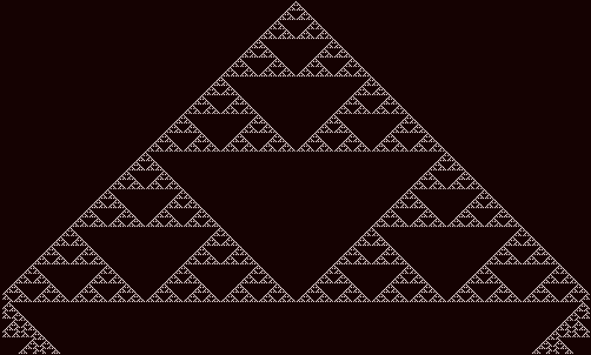
Правило 9410070122801091 з випадкового набору точок: 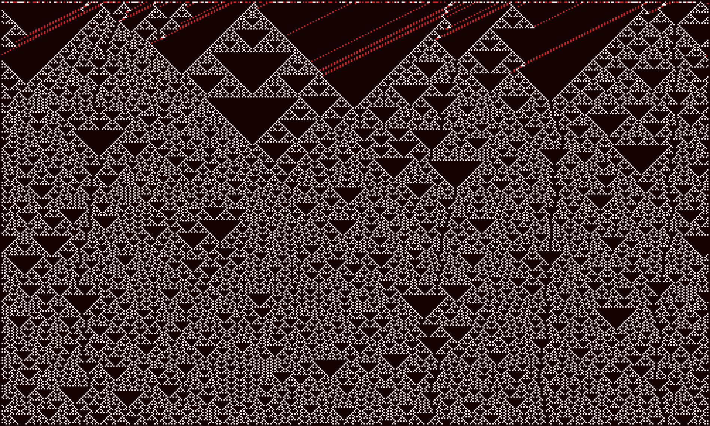
Правило 7780314429: 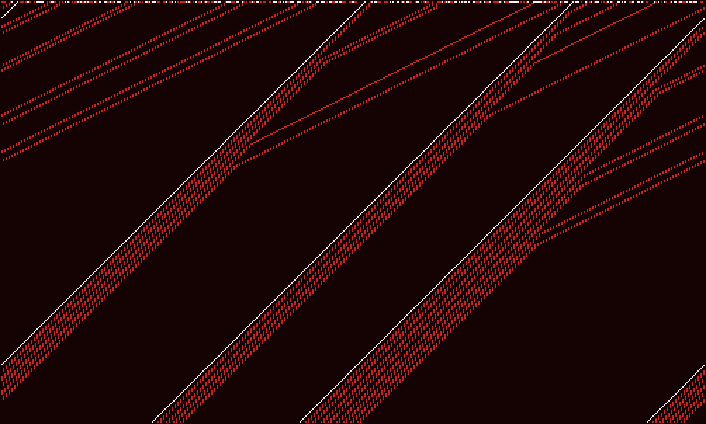
Правило 297031482100091: 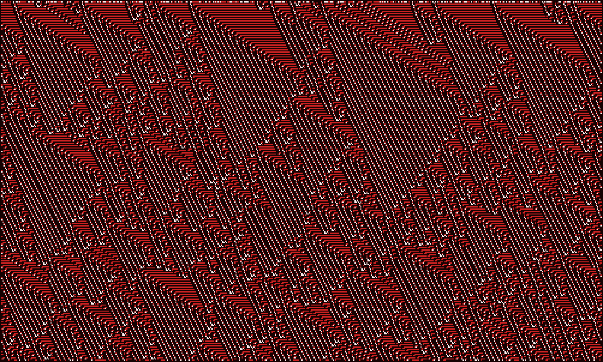